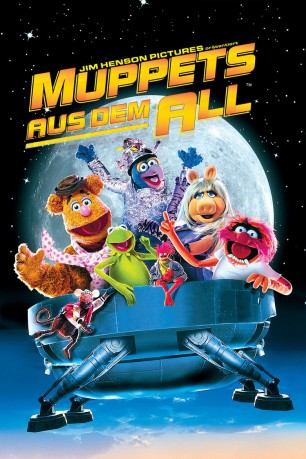
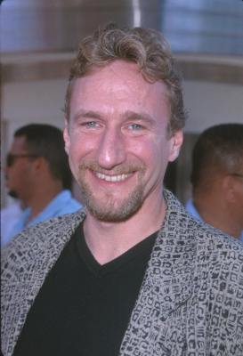
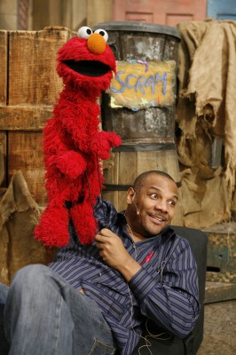

#774 Muppets aus dem All
Alternativ: Muppets from Space
 
 IMDB-Wertung: 6.3 / 10
IMDB-Wertung: 6.3 / 10  Metascore: 53
Metascore: 53 
Gonzo fühlt sich allein, obwohl er mit der gesamten glücklichen Muppets-Familie in einer Pension zusammenlebt. Der Grund für seine Einsamkeit ist, dass er der einzige seiner Sorte ist. Doch auf einmal erhält er vom Cornflakes-Alphabeten die Nachricht, dass es noch mehrere seiner Art im Weltall geben soll, die ihn bald abholen. Als er nachts mal wieder die Sterne beobachtet, trifft ihn der Blitz. Auf diese Weise erfährt Gonzo, wie er sein Volk auf sich aufmerksam machen soll: er muss eine Botschaft in den Rasen mähen! Den anderen Muppets gefällt gar nicht, was ihr Freund da tut, sie zweifeln an seiner geistigen Verfassung. Und dummerweise ruft Gonzo mit seiner Aktion auch nicht die Freunde aus dem All, sondern eine für die Alienabwehr zuständige Regierungsorganisation auf den Plan ...
Jahr: 1999
Dauer: 87 Minuten
FSK: 0
Land: USA Studio: Columbia PicturesTonspuren: DTS - ,
Untertitel: Deutsch,
Auflösung: 1080p (1920x1080) Größe: 8130 MB
Genre: Abenteuer, Komödie, Familie, Fantasy, Sci-Fi
Regisseur: Tim Hill
Drehbuch: Jerry Juhl, Joey Mazzarino, Ken Kaufman
Soundtrack: Jamshied Sharifi
Darsteller:
 Dave Goelz als Gonzo / Bunsen Honeydew / Waldorf / The Birdman
Dave Goelz als Gonzo / Bunsen Honeydew / Waldorf / The Birdman Steve Whitmire als Kermit the Frog / Rizzo the Rat / Beaker / Cosmic Fish #1 / Rainbow / Miss Piggy, assistant
Steve Whitmire als Kermit the Frog / Rizzo the Rat / Beaker / Cosmic Fish #1 / Rainbow / Miss Piggy, assistant Bill Barretta als Pepe the Prawn / Bobo as Rentro / Johnny Fiama / Bubba the Rat / Cosmic Fish #2
Bill Barretta als Pepe the Prawn / Bobo as Rentro / Johnny Fiama / Bubba the Rat / Cosmic Fish #2 Jerry Nelson als Robin / Statler / Ubergonzo
Jerry Nelson als Robin / Statler / Ubergonzo-  Brian Henson als Dr. Phil Van Neuter / Sal Minella
-  Kevin Clash als Clifford
 Frank Oz als Miss Piggy / Fozzie Bear / Animal / Sam the Eagle
Frank Oz als Miss Piggy / Fozzie Bear / Animal / Sam the Eagle Jeffrey Tambor als K. Edgar Singer
Jeffrey Tambor als K. Edgar Singer F. Murray Abraham als Noah
F. Murray Abraham als Noah Rob Schneider als TV Producer
Rob Schneider als TV Producer Josh Charles als Agent Barker
Josh Charles als Agent Barker Ray Liotta als Gate Guard
Ray Liotta als Gate Guard David Arquette als Dr. Tucker
David Arquette als Dr. Tucker Andie MacDowell als Shelley Snipes
Andie MacDowell als Shelley Snipes Kathy Griffin als Female Armed Guard
Kathy Griffin als Female Armed Guard Pat Hingle als General Luft
Pat Hingle als General Luft- Hulk Hogan als Man in Black
 Veronica Alicino als TV Stage Manager
Veronica Alicino als TV Stage Manager Richard Fullerton als Gate Guard
Richard Fullerton als Gate Guard Mark Joy als Gate Guard
Mark Joy als Gate Guard- Elaine Nalee als Mashed Potato Lady
- Peter Linz als Additional Muppet Performer / Miss Piggy, assistant / Beach Hippie
 Tim Parati als Additional Muppet Performer
Tim Parati als Additional Muppet Performer Allan Trautman als Additional Muppet Performer
Allan Trautman als Additional Muppet Performer Katie Holmes als Joey Potter , uncredited
Katie Holmes als Joey Potter , uncredited Joshua Jackson als Beach Scene , uncredited
Joshua Jackson als Beach Scene , uncredited- Langley McArol als Security Guard , uncredited
- Gary Owens als UFO Mania Announcer , uncredited
- David Lenthall als Mikey the Cameraman
- Carl Espy als TV Associate Producer
- Deron Barnett als Child
- Chrissy Mullins als Little Girl
- Rickey Boyd als Additional Muppet Performer / Animal, assistant / Beach Hippie
- Alice Dinnean als Additional Muppet Performer
- John Henson als Additional Muppet Performer / Sweetums
- Adam Hunt als Additional Muppet Performer / Scooter
- John Kennedy als Additional Muppet Performer / Fozzie Bear, assistant / Sam the Eagle, assistant / Beach Hippie
- Drew Massey als Additional Muppet Performer / Beach Hippie
- Ed May als Additional Muppet Performer
- Andrew Stone als Additional Muppet Performer
- Kim Allen als Additional Muppet Performer
- Evy Berman als Additional Muppet Performer
- John Boone als Additional Muppet Performer
- Dennis W. Britt als Additional Muppet Performer
- Tyler Bunch als Additional Muppet Performer
- Lisa Consolo als Additional Muppet Performer
- Rowell Gormon als Additional Muppet Performer
- BJ Guyer als Additional Muppet Performer
- Greg Jarnigan als Additional Muppet Performer
- Rob Killen als Additional Muppet Performer
Datei: X:\Kinder Collections\Muppets\Muppets aus dem All (1999, FSKo.Al., 1920x1080).mkv seit 23.03.2015
Festplatte: Kinder-Filme+Trick
 Es gibt insgesamt 13 Filme in der Gruppe 'Kinder Collections\Muppets'
Es gibt insgesamt 13 Filme in der Gruppe 'Kinder Collections\Muppets'